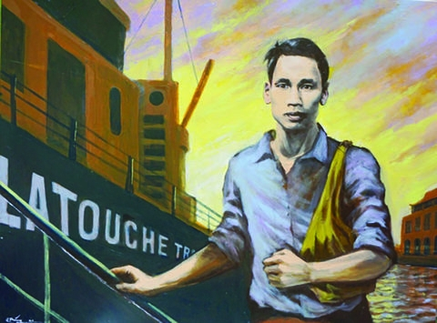
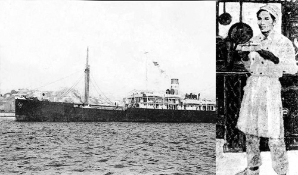
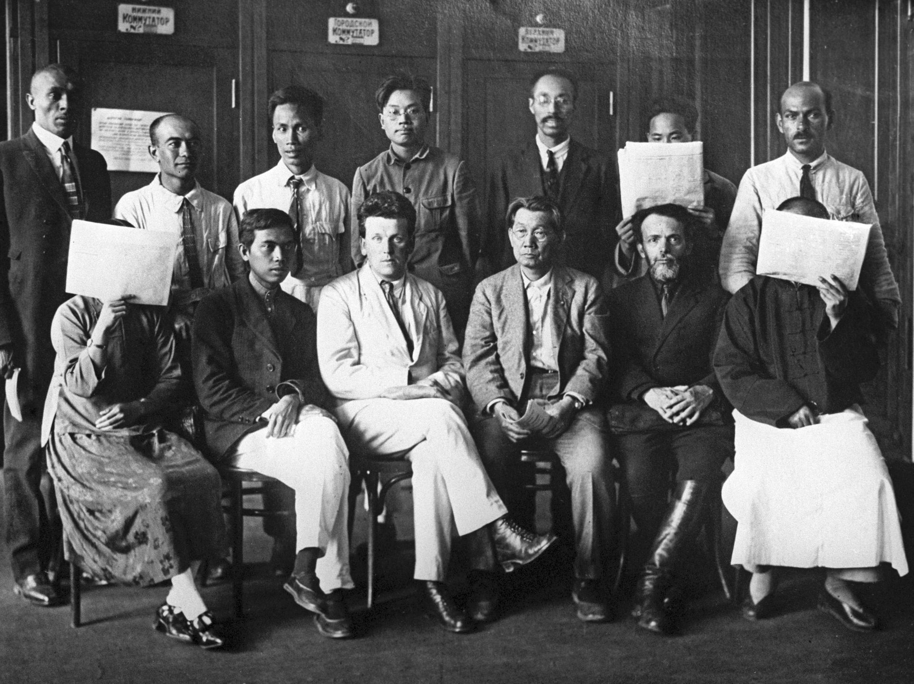
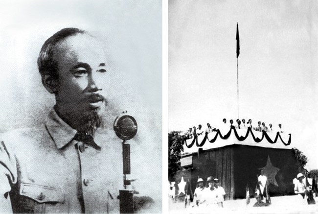
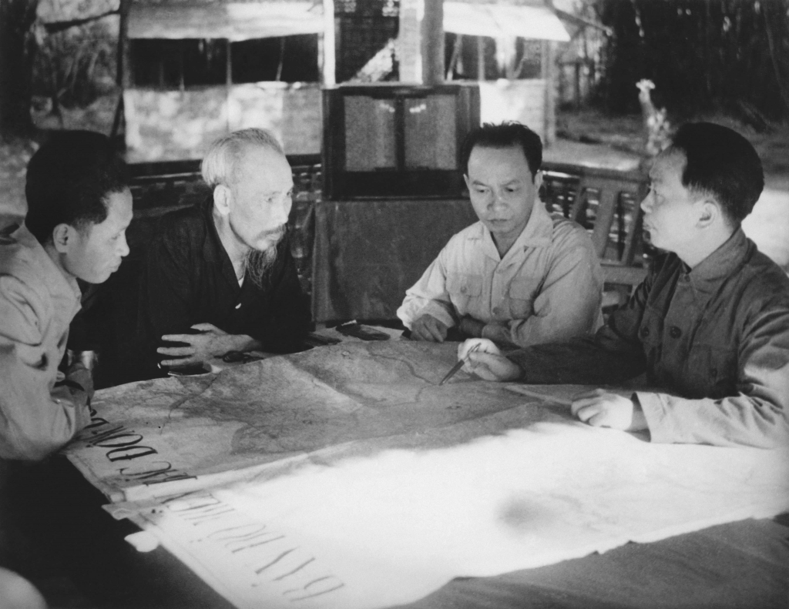

Ngày 5/6/1911, Nguyễn Tất Thành rời bến Nhà Rồng để tìm một con
đường giải phóng dân tộc. Trong hành trình qua nhiều nước, Người
vừa lao động kiếm sống, vừa tìm hiểu xã hội và đời sống của những
người dân thuộc địa. Qua đó, Người nhận thấy khát vọng độc lập của
Việt Nam gắn với cuộc đấu tranh chống áp bức ở nhiều nơi trên thế
giới.
Năm 1919, với tên Nguyễn Ái Quốc, Người gửi Bản yêu sách của nhân
dân An Nam tới Hội nghị Versailles, đề nghị các quyền tự do và
bình đẳng cho người Việt. Năm 1920, sau khi nghiên cứu tư tưởng
của Lênin về vấn đề dân tộc và thuộc địa, Người tham dự Đại hội
Tours và trở thành một trong những người sáng lập Đảng Cộng sản
Pháp. Đây là bước ngoặt giúp Người xác định hướng đi cho cuộc đấu
tranh giành độc lập của Việt Nam.

Sau năm 1920, Nguyễn Ái Quốc tích cực viết báo, vận động sự đoàn
kết giữa các dân tộc thuộc địa và truyền bá tư tưởng giải phóng
dân tộc. Người tham gia sáng lập Hội Liên hiệp các dân tộc thuộc
địa; các hoạt động báo chí, trong đó có báo Người cùng khổ, góp
phần đưa vấn đề thuộc địa đến với công chúng quốc tế.
Năm 1925, tại Quảng Châu, Người thành lập Hội Việt Nam Cách mạng
Thanh niên, mở lớp huấn luyện để đào tạo cán bộ và cho ra đời báo
Thanh Niên. Những bài giảng của Người được tập hợp thành tác phẩm
Đường Kách mệnh. Quá trình chuẩn bị về tư tưởng và tổ chức ấy dẫn
tới một dấu mốc quan trọng: tháng 2/1930, Nguyễn Ái Quốc chủ trì
hội nghị hợp nhất các tổ chức cộng sản, thành lập Đảng Cộng sản
Việt Nam.

Ngày 28/1/1941, Nguyễn Ái Quốc trở về Việt Nam sau hơn 30 năm xa
Tổ quốc. Tháng 5 cùng năm, Người triệu tập Hội nghị Trung ương lần
thứ tám, đặt nhiệm vụ giải phóng dân tộc lên hàng đầu và thành lập
Mặt trận Việt Minh để tập hợp lực lượng yêu nước. Từ căn cứ cách
mạng, công việc xây dựng tổ chức, lực lượng vũ trang và chuẩn bị
cho cuộc tổng khởi nghĩa được đẩy mạnh.
Tháng 8/1945, Hồ Chí Minh cùng Trung ương Đảng lãnh đạo nhân dân
tiến hành Tổng khởi nghĩa giành chính quyền. Ngày 2/9/1945, tại
Quảng trường Ba Đình, Người đọc Tuyên ngôn Độc lập, tuyên bố thành
lập nước Việt Nam Dân chủ Cộng hòa. Cuộc đấu tranh giành độc lập
bước sang một giai đoạn mới: xây dựng và bảo vệ chính quyền của
đất nước.

Sau năm 1945, nước Việt Nam mới thành lập phải đối mặt với nhiều
khó khăn và nguy cơ chiến tranh. Chủ tịch Hồ Chí Minh cùng Chính
phủ tìm cách giữ vững nền độc lập. Khi kháng chiến toàn quốc bùng
nổ cuối năm 1946, Người kêu gọi nhân dân đoàn kết đứng lên bảo vệ
đất nước. Cuộc kháng chiến chống thực dân Pháp kéo dài đến chiến
thắng Điện Biên Phủ năm 1954.
Từ năm 1954, Chủ tịch Hồ Chí Minh cùng Trung ương Đảng lãnh đạo
công cuộc xây dựng miền Bắc và tiếp tục đấu tranh vì mục tiêu
thống nhất Tổ quốc. Trong những năm cuối đời, Người vẫn theo dõi
tình hình đất nước và để lại Di chúc, gửi gắm mong muốn về một
Việt Nam hòa bình, thống nhất. Người qua đời ngày 2/9/1969; mục
tiêu thống nhất đất nước được nhân dân Việt Nam hoàn thành vào năm
1975.
